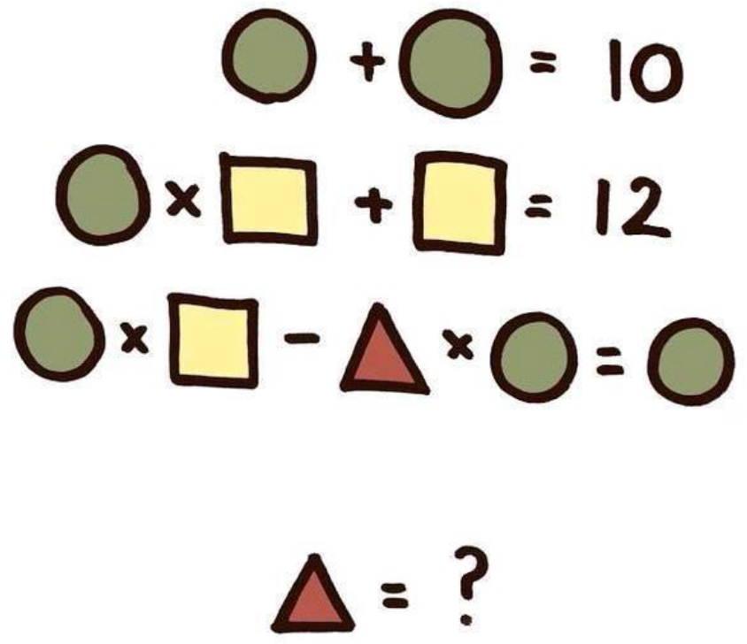

<!doctype html>
<html lang="en">

	<head>
		<meta charset="utf-8">

		<title>Flexibility in Solidity</title>

		<meta name="author" content="Christian Reitwiessner">

		<meta name="apple-mobile-web-app-capable" content="yes" />
		<meta name="apple-mobile-web-app-status-bar-style" content="black-translucent" />

		<meta name="viewport" content="width=device-width, initial-scale=1.0, maximum-scale=1.0, user-scalable=no, minimal-ui">

		<link rel="stylesheet" href="../reveal.js/css/reveal.css">
		<link rel="stylesheet" href="../reveal.js/css/theme/simple.css" id="theme">

		<!-- Code syntax highlighting -->
		<link rel="stylesheet" href="../reveal.js/lib/css/zenburn.css">

		<!--[if lt IE 9]>
		<script src="lib/js/html5shiv.js"></script>
		<![endif]-->
		<script>
			var link = document.createElement( 'link' );
			link.rel = 'stylesheet';
			link.type = 'text/css';
			link.href = window.location.search.match( /print-pdf/gi ) ? 'css/print/pdf.css' : 'css/print/paper.css';
			document.getElementsByTagName( 'head' )[0].appendChild( link );
		</script>
<style type="text/css">
@font-face {
	font-family: PTSans;
	src: url('./pt-sans-regular.woff') format('woff');
	font-weight: normal;
	font-style: normal;
}
body, .reveal {
	font-family: PTSans, Arial, sans-serif;
}
.reveal .slides {
	text-align: left;
}
.reveal pre {
  width: inherit;
}
.reveal table th, .reveal table td {
    border-bottom: none;
}
.reveal h1, .reveal h2, .reveal h3, .reveal h4, .reveal h5, .reveal h6 {
	text-align: center;
	text-transform: none;
	font-family: PTSans, Arial, sans-serif;
}
p { text-align: left; }
.reveal .slides section .fragment.appear {
  opacity: 0;
  display: none;
}
.reveal .slides section .fragment.appear.visible {
  opacity: 1;
  display: block;
}
.reveal .slides section .fragment.appear-once {
  opacity: 0;
  display: none;
}
.reveal .slides section .fragment.appear-once.current-fragment {
  opacity: 1;
  display: block;
}
.backgrounds {
  -webkit-filter: opacity(0%);
  -moz-filter: opacity(0%);
  -o-filter: opacity(0%);
  -ms-filter: opacity(0%);
  filter: opacity(0%);
}
html.blurStrong .backgrounds {
  -webkit-filter: opacity(20%);
  -moz-filter: opacity(20%);
  -o-filter: opacity(20%);
  -ms-filter: opacity(20%);
  filter: opacity(20%);
}
html.blurLight .backgrounds {
  -webkit-filter: opacity(60%);
  -moz-filter: opacity(60%);
  -o-filter: opacity(60%);
  -ms-filter: opacity(60%);
  filter: opacity(60%);
}
</style>

	</head>

	<body>

		<div class="reveal">

			<!-- Any section element inside of this container is displayed as a slide -->
			<div class="slides">
 
<section data-markdown><script type="text/template">
## Flexibility in Solidity

<br/>
<br/>

Devcon3 - Cancún - 2017-11-03

<small>
Dr. Christian Reitwiessner <br/>
Ethereum Foundation <br/>
@ethchris   github.com/chriseth   chris@ethereum.org
</small>

</script></section>

<section data-markdown><script type="text/template">
### Language Design is a Game of Balances

<br/>
<br/>

<table>
<tr class="fragment"><td>Functionality,<br/>Complexity</td><td style="text-align:center;vertical-align:middle;">--</td><td style="text-align:center;vertical-align:middle;">Safety</td></tr>
<tr class="fragment"><td style="text-align:right;">\<br/>&nbsp;</td><td>&nbsp;<br/>Cost</td><td>/<br/>&nbsp;</td></tr>
</table>
</script></section>

<section data-markdown><script type="text/template">
### Path for Solidity

<br/>
<br/>

  - relatively safe and cheap high-level-looking features <!-- .element: class="fragment" -->
  - no magic, no surprises <!-- .element: class="fragment" -->
  - easy to use formal verification <!-- .element: class="fragment" -->
  - direct access to low-level features in a safe way <!-- .element: class="fragment" -->
</script></section>

<section data-markdown><script type="text/template">
### Structs and Dynamic Return Data

```TypeScript
contract C {
  struct Person { uint id; string name; bool isOwner; }
  Person[] persons;
  function registerPerson(uint id, string name, bool isOwner) {
    persons.push(Person(id, name, isOwner));
  }
}
```
</script></section>

<section data-markdown><script type="text/template">
### Structs and Dynamic Return Data

```TypeScript
contract C {
  struct Person { uint id; string name; bool isOwner; }
  Person[] persons;
  function registerPerson(uint id, string name, bool isOwner) {
    persons.push(Person(id, name, isOwner));
  }
  function registerPersons(                     ?                     ) {

    for (uint i = 0; i <  ? .length; i++) {
      persons.push(Person(              ?             ));
    }
  }
}
```
</script></section>

<section data-markdown><script type="text/template">
### Structs and Dynamic Return Data

```TypeScript
contract C {
  struct Person { uint id; string name; bool isOwner; }
  Person[] persons;
  function registerPerson(uint id, string name, bool isOwner) {
    persons.push(Person(id, name, isOwner));
  }
  function registerPersons(uint[] ids, string[] names, bool[] isOwners) {
    require(ids.length == names.length && names.length == isOwners.length);
    for (uint i = 0; i < ids.length; i++) {
      persons.push(Person(ids[i], names[i], isOwners[i]));
    }
  }
}
```
</script></section>
<section data-markdown><script type="text/template">
### Structs and Dynamic Return Data

```TypeScript
contract C {
  struct Person { uint id; string name; bool isOwner; }
  Person[] persons;
  function registerPerson(Person person) {
    persons.push(person);
  }
  function registerPersons(Persons[] _persons) {
    for (uint i = 0; i < _persons.length; i++) {
      persons.push(_persons[i]);
    }
  }
}
```
</script></section>

<section data-markdown><script type="text/template">
### Structs and Dynamic Return Data

```TypeScript
contract C {
  struct Person { uint id; string name; bool isOwner; }
  Person[] persons;
  function registerPerson(Person person) {
    persons.push(person);
  }
  function registerPersons(Persons[] _persons) {
    for (uint i = 0; i < _persons.length; i++) {
      persons.push(_persons[i]);
    }
  }
  function getPersons() returns (Person[]) {
    return persons;
  }
}
```
</script></section>
  
<section data-markdown><script type="text/template">
### Inside the Compiler

Compiler used to have code like 

```c++
// stack: ref new_length current_length ref_value
solAssert(_context.stackHeight() - stackHeightStart == 4 - 2, "Stack");
_context << Instruction::POP << Instruction::DUP3;
CompilerUtils(_context).computeHashStatic();
_context << Instruction::DUP1 << Instruction::SLOAD << Instruction::SWAP1;
// stack: ref new_length current_length first_word data_location
_context << Instruction::DUP3;
ArrayUtils(_context).convertLengthToSize(_type);
```
</script></section>

<section data-markdown><script type="text/template">
### Inside the Compiler
  
This is gradually changing to
  
```ocaml
function <functionName>(value, pos) <return> {
  let length := <lengthFun>(value)
  <storeLength> // might update pos
  let headStart := pos
  let tail := add(pos, mul(length, 0x20))
  let srcPtr := <dataAreaFun>(value)
  for { let i := 0 } lt(i, length) { i := add(i, 1) }
  {
    mstore(pos, sub(tail, headStart))
    tail := <encodeToMemoryFun>(<arrayElementAccess>, tail)
    srcPtr := <nextArrayElement>(srcPtr)
    pos := add(pos, 0x20)
  }
  pos := tail
  <assignEnd>
}
```

More about IULIA in Alex Beregszaszi's talk.
</script></section>

<section data-markdown><script type="text/template">
### Tooling

<br/>

- remix got gigantic upgrades (see Yann Levreau's talk) <!-- .element: class="fragment" -->
- AST import / export => mutation testing by Julius Faber <!-- .element: class="fragment" -->
- standard-json-io: fine-grained settings, reproducibility <!-- .element: class="fragment" -->
- Documentation: Translation into Spanish! <!-- .element: class="fragment" -->
<br/> https://github.com/AdrianClv/solidity-docs-es <!-- .element: class="fragment" -->
</script></section>
  
<section data-markdown><script type="text/template">
### Formal Verification
  
- Last year: Why3 is Great!

```TypeScript
/// @why3 contract-prelude constant total : int
/// @why3 contract-prelude axiom total_small : total <= max_uint256
/// @why3 contract-account invariant { sum #balance = total }
contract Token {
  mapping (address => uint256) balance;
  function transfer(address _from, address _to, uint256 _val) {
    if (balance[_from] < _val) throw;
    balance[_from] = balance[_from] - _val;
    /// @why3 here assert { sum #balance = total - to_int !(__val) };
    /// @why3 here assert { to_int #balance[_to] <= sum #balance };
    balance[_to] = balance[_to] + _val;
    /// @why3 here assert { sum #balance = (total - to_int _val) + to_int _val};
  }
}
```

... perhaps not so much <!-- .element: class="fragment" -->
</script></section>

<section data-markdown><script type="text/template">
### SMTLib2 / Z3

<br/>

```TypeScript
contract Token {
  mapping (address => uint256) balance;
  function transfer(address _from, address _to, uint256 _val) public {
    require(_val <= balance[_from]);

    uint before = balance[_from] + balance[_to];
    balance[_from] = balance[_from] - _val;
    balance[_to] = balance[_to] + _val;

    uint after = balance[_from] + balance[_to];
    assert(before == after);
  }
}
```
</script></section>

<section data-markdown><script type="text/template">
### SMTLib2 / Z3

<br/>


Assumes "require" expressions and tries to prove:

  - assertions
  - no overflows / underflows
  - no division by zero
  - no constant conditions / unreachable code
  - ...
</script></section>
  
<section data-markdown><script type="text/template">
### SMTLib2 / Z3

<br/>

```TypeScript
pragma experimental SMTChecker;
contract SimpleExample {
  function add(uint a, uint b) pure public returns (uint) {

    return a + b;
  }
}
```

```asciidoc
:4:12: Warning: Overflow (result larger than 2**256-1) happens here for:


    return a + b;
           ^---^
```
<!-- .element: class="fragment appear-once" -->
```asciidoc
:5:12: Warning: Overflow (result larger than 2**256-1) happens here for:
  a = 2**256 - 1
  b = 1
  result = 2**256
  
    return a + b;
           ^---^
```
<!-- .element: class="fragment" -->

</script></section>

<section data-markdown><script type="text/template">
### SMTLib2 / Z3

<br/>

```TypeScript
pragma experimental SMTChecker;
contract SimpleExample {
  function add(uint a, uint b) pure public returns (uint) {
    require(a < 2**100 && b < 2**100);
    return a + b;
  }
}
```
```asciidoc
Compilation successful.
```
</script></section>
  
<section data-markdown><script type="text/template">
### SMTLib2 / Z3

<br/>

```TypeScript
pragma experimental SMTChecker;
contract SimpleExample {
  function add() pure public returns (uint) {
    for (uint i = 10; i >= 0; i--) {
      // ...
    }
  }
}
```
  <!-- .element: class="fragment" -->

```asciidoc
:4:23: Warning: For loop condition is always true.
  for (uint i = 10; i >= 0; i--) {
                    ^----^
```
  <!-- .element: class="fragment" -->
</script></section>

<section data-markdown><script type="text/template">
### SMTLib2 / Z3

<div style="display: flex; align-items: flex-start;">

<pre class="fragment"><code class="lang-TypeScript">pragma experimental SMTChecker;
contract SimpleExample {
  function f(int16 circle, int16 square,
             int16 triangle) pure public {
    require(circle + circle == 10);
    require(circle &#x2a; square + square == 12);
    require(circle &#x2a; square -
            triangle &#x2a; circle == circle);
    assert(false);
  }
}
</code></pre>
</div>

<pre class="fragment"><code>:7:5: Warning: Assertion violation happens here for:
circle = 5
square = 2
triangle = 1

  assert(false);
  ^-----------^</code></pre>

</script></section>

        </div>

		</div>

		<script src="../reveal.js/lib/js/head.min.js"></script>
		<script src="../reveal.js/js/reveal.js"></script>

		<script>
			// Full list of configuration options available at:
			// https://github.com/hakimel/reveal.js#configuration
			Reveal.initialize({
				controls: true,
				progress: true,
				history: true,
				center: false,

				transition: 'none', // none/fade/slide/convex/concave/zoom

				// Optional reveal.js plugins
				dependencies: [
					{ src: '../reveal.js/lib/js/classList.js', condition: function() { return !document.body.classList; } },
					{ src: '../reveal.js/plugin/markdown/marked.js', condition: function() { return !!document.querySelector( '[data-markdown]' ); } },
					{ src: '../reveal.js/plugin/markdown/markdown.js', condition: function() { return !!document.querySelector( '[data-markdown]' ); } },
					{ src: '../reveal.js/plugin/highlight/highlight.js', async: true, callback: function() { hljs.initHighlightingOnLoad(); } },
					{ src: '../reveal.js/plugin/zoom-js/zoom.js', async: true },
					{ src: '../reveal.js/plugin/notes/notes.js', async: true }
				]
			});

		</script>

	</body>
</html>
